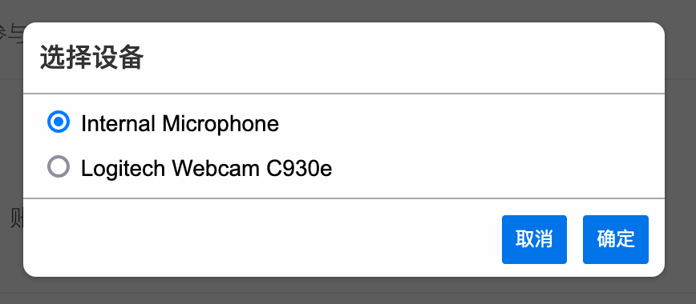

Web/HTML5 - 群组语音通话¶
本示例较之前的示例程序复杂，因此建议您先阅读 视频通话 和 群组管理 再阅读本示例。
时信魔方 里使用 MultipointComm 模块进行多方通讯。这个示例里我们将使用 Group 进行群组成员之间的多人通话，这样便于群组成员随时发起通话邀请。
在开始讲解前我们需要先清楚以下几个概念：
魔方引擎里 CommField 表示一个“场域”，一个场域就是若干个通讯终端节点的集合和控制中心，每个通讯终端用 CommFieldEndpoint 表示。
每个终端参与通话时，上行（出站）数据和下行（入站）数据分离，且每个终端有且仅有一路上行连接和一路下行连接。
通话控制策略影响媒体服务器对数据流的控制策略，由服务器控制终端在场域里的数据行为。终端的媒体控制操作不影响服务器上的媒体流控制。
快速开始¶
在开始运行程序之前您需要在您的设备上连接麦克风设备，例如使用 USB 进行连接的网络麦克风或者您的笔记本电脑内置的麦克风。
按照以下步骤运行演示程序：
执行以下命令运行演示程序：
git clone https://gitee.com/shixinhulian/cube-javascript cd cube-javascript/cube npm install npm run example打开浏览器（Chrome 或 Firefox）输入：http://localhost:8000/examples/group-audio/ 或 https://localhost:4430/examples/group-audio/ 进入演示程序界面。
选择一个演示账号，点击“登录”按钮。
点击“发起群组通话”按钮，并允许开启麦克风，将发起或加入群组通话。
点击“加入群组通话”按钮，并允许开启麦克风，将加入群组通话。
群组语音通话¶
在通话过程中，在“参与者”姓名后的输入框里可以实时看到对方麦克风的音量显示。如果需要查看 RTP 统计数据信息，点击“显示/隐藏连接数据”，如下图所示：
{kind=link}
工作原理¶
示例的基本工作原理：终端（浏览器）申请为指定的群组创建 CommField 进行群组通信，然后启动 WebRTC 创建上行通道向服务器发送本地麦克风的数据流，接着创建下行通道服务器将场域内混码后的语音数据流发给给终端。
媒体服务器 MCU 数据流¶
理解示例程序¶
准备事件监听。除了通话的流程事件：
CommEvent.InProgress，CommEvent.Ringing，CommEvent.Connected和CommEvent.Bye，我们还需要增加监听以下几个事件：CommEvent.Arrived- 当有新的成员加入通话时该事件被触发。触发事件调用onArrived()函数刷新“参与者”列表。CommEvent.Left- 当成员退出通话时该事件被触发。触发事件调用onLeft()函数刷新“参与者”列表。CommEvent.MicrophoneVolume- 当成员麦克风音量改变时该事件被触发。触发事件调用onMicrophoneVolume()函数显示成员的麦克风音量数据。
选择一个可用的设备。当我们的主机上安装了多个麦克风设备时，我们可以使用 MediaDeviceTool.enumDevices() 方法来枚举已经安装的设备，并选择其中一个设备使用，如下图所示：
选择麦克风设备¶
在示例里我们使用
helper.js里的selectMediaDevice()函数显示一个设备列表来进行选择操作。在发起通话前，设置媒体约束时将选择的设备赋值给媒体约束对象：// 创建媒体约束，使用音频，禁用视频 var mediaConstraint = new MediaConstraint(false, true); // 设置设备 mediaConstraint.setAudioDevice(device);
使用
video标签播放通话语音数据，在index.html里加入 video 标签：<div id="media-container"> <video id="local" autoplay></video> <video id="remote" autoplay></video> </div>
在发起通话前将标签 DOM 实例赋值给魔方引擎：
cube.mpComm.setLocalVideoElement(document.querySelector('video#local')); cube.mpComm.setRemoteVideoElement(document.querySelector('video#remote'));
发起/加入通话和退出通话，依次使用以下方法：
makeCall() - 使用这个方法传入 Group 实例即可发起通话，同样的，加入通话也是调用该方法。
hangupCall() - 使用这个方法从当前的通话中退出。
控制麦克风数据。CommFieldEndpoint 提供了对麦克风设备数据的控制操作：
isAudioMuted() - 用于判断麦克风是否被静音。
muteAudio() - 将麦克风静音，即设备不再传输麦克风数据到服务器。
unmuteAudio() - 将麦克风恢复，即设备恢复将麦克风数据传输到服务器。
这里需要注意的是，只有对当前登录的联系人对应的
CommFieldEndpoint进行操作才能控制本地的媒体设备， 在任何情况下，您都无法控制别人的媒体设备 。使用以下代码获得自己的本地终端对象实例：cube.mpComm.getActiveField().getEndpoint();
获取 RTP 统计数据。这是一个 可选操作，如果您对 RTP 数据不感兴趣可以跳过这节内容。
CommField 对象提供了
snapshootStatsReport()函数用于快照当前的 RTP 状态报告：cube.mpComm.getActiveField().snapshootStatsReport(function(field, stats) { [...] }, function(field, stats) { [...] });
代码详解¶
示例里我们使用的文件有：
index.html ：主页面文件。
main.css ：页面样式表文件。
main.js ：示例的程序主文件。包括程序逻辑流程和页面事件处理。
helper.js ：提供一些帮助函数的库文件。
cube.js ：时信魔方的 JavaScript 客户端库文件。
监听魔方引擎事件：
// 监听 SignIn 事件 cube.contact.on(ContactEvent.SignIn, onSignIn); // 监听通话相关事件 cube.mpComm.on(CommEvent.InProgress, onInProgress); cube.mpComm.on(CommEvent.Ringing, onRinging); cube.mpComm.on(CommEvent.Connected, onConnected); cube.mpComm.on(CommEvent.Bye, onBye); // 监听参与人事件 cube.mpComm.on(CommEvent.Arrived, onArrived); cube.mpComm.on(CommEvent.Left, onLeft); // 监听麦克风音量事件 cube.mpComm.on(CommEvent.MicrophoneVolume, onMicrophoneVolume);
为界面上 UI 控件绑定事件：
btnLogin.onclick = login; btnLogout.onclick = logout; btnInitiate.onclick = initiate; btnJoin.onclick = join; btnQuit.onclick = quit; btnSwitchMic.onclick = switchMic; btnStatistics.onclick = statistics;
账号签入之后创建一个用于群组通话的群组。为了便于示例演示，我们约定创建一个名为“ 群组语音通话演示群 ”的群组将所有演示账号加入到群组里，这样使用演示账号签入之后就可以进行群组通话了。
function onSignIn(event) { [...] var groupName = '群组语音通话演示群'; var currentGroup = null; // 查询与该账号有关的所有群组 cube.contact.queryGroups(function(list) { // 查找是否有名称匹配的群组 for (var i = 0; i < list.length; ++i) { var group = list[i]; if (group.getName() == groupName) { currentGroup = group; break; } } if (null == currentGroup) { // 创建新群组 cube.contact.createGroup(groupName, getAllContactsId(), function(group) { [...] groupId = group.getId(); }); } else { // 已经有这个群组，不需要创建 [...] groupId = currentGroup.getId(); } }); }
发起群组通话：
function initiate() { // 选择媒体设备 selectMediaDevice('audio', function(device) { [...] // 设置媒体元素 cube.mpComm.setLocalVideoElement(document.querySelector('video#local')); cube.mpComm.setRemoteVideoElement(document.querySelector('video#remote')); // 创建媒体约束，使用音频，禁用视频 var mediaConstraint = new MediaConstraint(false, true); // 设置设备 mediaConstraint.setAudioDevice(device); // 获取指定的群组 cube.contact.getGroup(groupId, function(group) { // 使用指定的群组发起通话 cube.mpComm.makeCall(group, mediaConstraint, function(activeCall) { [...] }, function(error) { [...] }); }); }); }
函数
selectMediaDevice()由 helper.js 文件提供，以对话框方式提示选择设备，如果只发现一个可用设备则不会显示对话框。创建不使用视频，仅使用音频通道的
MediaConstraint媒体约束，并设置设备。从 ContactService 模块获得 Group 实例之后，将 Group 实例传递给 makeCall() 发起群组通话。当然加入群组通话也是调用 makeCall() 方法，这在后面会讲到。
加入群组通话：
function join() { // 获取指定的群组 cube.contact.getGroup(groupId, function(group) { // 判断群组是否正在进行通话 cube.mpComm.isCalling(group, function(calling) { if (!calling) { alert('当前群组没有正在进行的语音通话'); return; } // 如果群组正在通话，则执行 initiate() 函数 initiate(); }); }); }
如前所述加入群组通话也是调用 makeCall() 方法。在示例里代码里，我们演示了使用 isCalling() 来判断指定的群组是否正在进行群组通话。
退出群组通话：
function quit() { [...] // 挂断当前的通话 cube.mpComm.hangupCall(function() { [...] }, function(error) { [...] }); }
在任何时候退出通话都可以调用 hangupCall() 来操作。退出群组通话也是如此。
处理麦克风音量事件：
function onMicrophoneVolume(event) { var endpoint = event.data.endpoint; var volume = event.data.volume; if (endpoint.contact.id == cube.contact.getSelf().id) { var num = Math.round(volume * 0.2); var chunk = []; for (var i = 0; i < num; ++i) { chunk.push('■'); } inputMicVolume.value = chunk.join(''); } // 更新麦克风音量显示 refreshMicVolume(endpoint, volume); }
魔方引擎的麦克风音量值是从 0 到 100 的数值，数值越大表示麦克风输出的音量越大。为了便于显示示例程序将音量值乘于 0.2 将数值划分为五个区间显示，即 0 到 20 显示一个方块（ ■ ） ，20 到 40 显示两个方块（ ■■ ），依此类推。